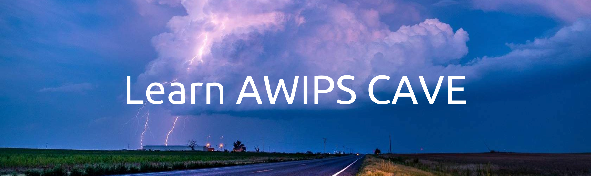
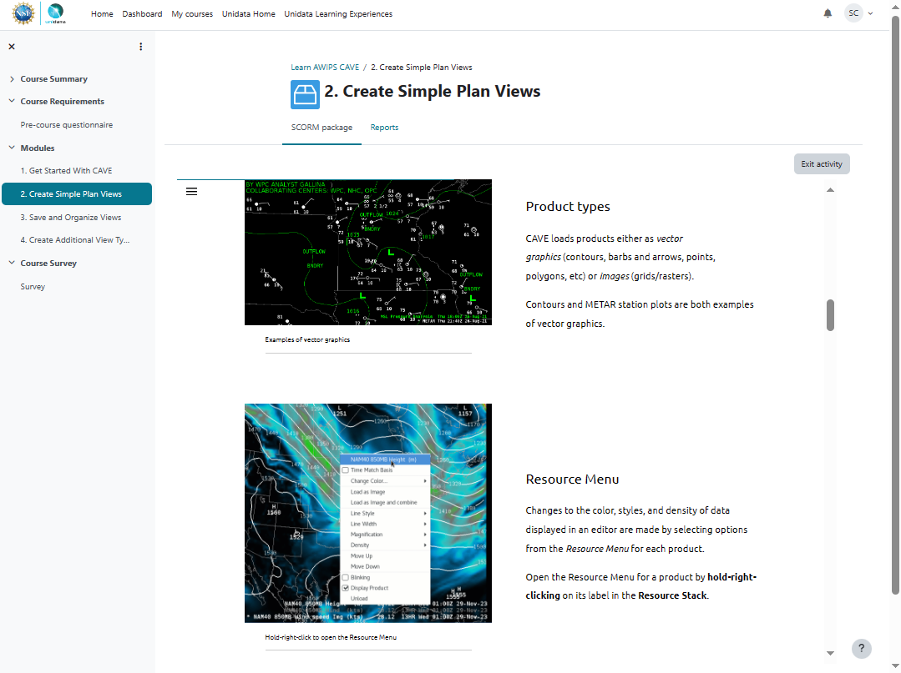
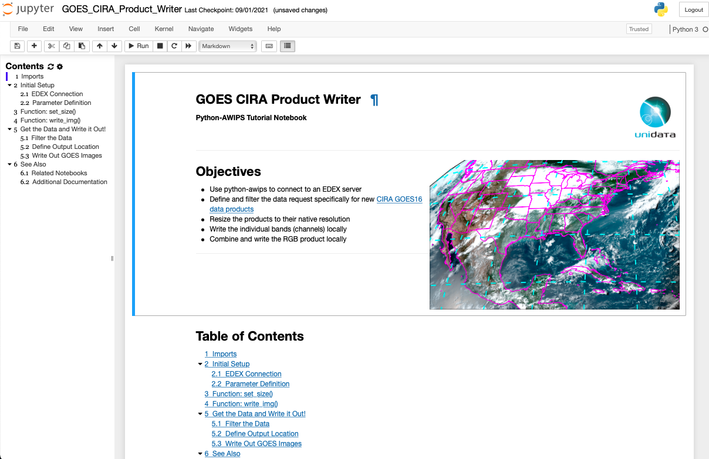
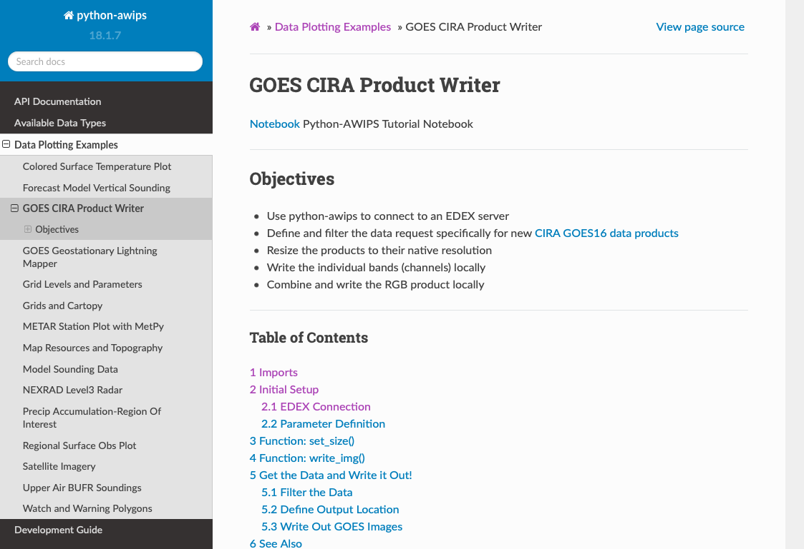

Educational Resources
Here at Unidata, we want to provide as many resources as possible to make our tools and applications easy to use. For AWIPS we currently have a new eLearning course that is specific to CAVE. We also have a suite of Jupyter Notebooks that are meant to provide a detailed overview of many capabilities of python-awips.
CAVE eLearning Course
Learn AWIPS CAVE is our online educational course for those interested in learning about CAVE.

Access
Please create an account on Unidata eLearning, then self-enroll in Learn AWIPS CAVE.
Content
Learn AWIPS CAVE is specifically tailored to content regarding CAVE -- the local graphical application used to view weather data. The following topics and capabilities are covered throughout the course:
- Launching CAVE
- Navigating the interface
- Modifying product appearances
- Understanding the time match basis
- Creating publication-quality graphics
- Exploring various CAVE layouts
- Saving and loading procedures and displays
- Using radar displays
- Using baselines and points
- Creating time series displays
- Creating vertical cross section displays
- Using the NSHARP editor for soundings
- Viewing model soundings
Prerequisites
Required:
- A supported web browser
- CAVE version 18.2.1 installed on a supported operating system
Recommended:
- A keyboard with a numpad and mouse with a scrollwheel
- Second monitor
Design
Learn AWIPS CAVE is designed for those new to AWIPS or for those seeking to learn best practices. The course is organized into modular sections with supporting lessons, allowing for spaced learning or completion in multiple class or lab sessions. Each section concludes with a quiz to assess learning, and results can be requested by instructors or supervisors for their classes/teams. Below is a snapshot taken from the course.

- Lessons are tied to relevant learning objectives.
- Lessons are scaffolded such that each skill builds upon the next.
- Tutorials, challenges, and assessments are designed to support higher-order thinking skills and learning retention.
Support
If you experience any technical issues with our online course, please contact us at: support-elearning@unidata.ucar.edu
Python-AWIPS Example Notebooks
In addition to CAVE, AWIPS also has a Python package called python-awips which allows access to all data on an EDEX server. We have created a suite of Jupyter Notebooks as examples for how to use various functions of python-awips.
Access
All of our Notebooks can be downloaded and accessed locally by following the source code installation instructions found on our python-awips website.

Additionally, non-interactive webpage renderings of each of the Notebooks are also available for quick and easy references.

Content
Our python-awips Notebooks span a wide range of topics, but generally cover the following:
- Investigating what data is available on an EDEX server
- Accessing and filtering desired data based on time and location
- Plotting and analyzing datasets
- Specific examples for various data types: satellite imagery, model data, soundings, surface obs, and more
AWIPS Tips Blog Series
AWIPS Tips is a bi-weekly (every two weeks) blog series that is posted on our Unidata blogs page. Entries in the series cover topics relating to CAVE, python-awips, EDEX, and more.
Access
View all of the AWIPS Tips blogs here, and easily search for them using the awips-tips tag.
Content
A full list of all released blogs can be found below:
General
- Welcome to AWIPS Tips!
- AWIPS 18.2.1 Software Release
- Announcing AWIPS eLearning
- AWIPS 18.2.1-3 Software Release
- Access Learn AWIPS CAVE from Unidata eLearning
- AWIPS 18.2.1-5 Software Release
CAVE
- Visualizing Data in CAVE
- Display Capabilities in CAVE
- Time Tips
- Explore the CAVE Product Browser
- CAVE's Local Cache: caveData
- Explore the CAVE Volume Browser: Plan Views
- Using CAVE's Points and Baselines Tool
- Explore the CAVE Volume Browser: Cross Section and Time Series
- Using CAVE Displays and Procedures
- Getting Started With the NSHARP Display Tool
- Explore the CAVE Volume Browser: Model Soundings
- NUCAPS Soundings
Python-AWIPS
- Access Model Output with Python-AWIPS
- Plot New GOES Products From Unidata's Public EDEX
- Load Map Resources and Topography using Python-AWIPS
- Create a Colored Surface Temperature Plot